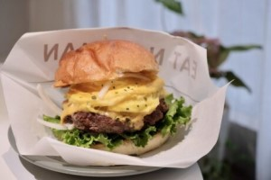

| 嘉義雞肉飯 | |
據嘉義當地耆老口述，最早源於民國38年，「第一商場」的元老店家師傅林添壽，偶發奇想之下，將拜拜時買的雞肉(當時是用肉雞)，切絲放在白飯上，淋上滷汁成為雞肉飯後，覺得口感獨特，正式在中山路上賣起雞肉飯。爾後演進改良，成為最接近民眾喜愛口感的火雞肉飯。其中美味的關鍵取決於火雞肉、米飯、醬汁、油蔥酥的絕妙組合，色澤油亮誘人，香氣撲鼻更讓人食指大動，更曾獲得農糧署票選「台灣十大招牌飯」的第一名。 資料來源：嘉義市觀光旅遊網 |
|
| Nose man鼻孔先生手作早午餐 | |
餐點品項有三明治、漢堡、厚片吐司、點心與飲料，以及西式早餐店不常見的粉漿蛋餅。價位從單點最低15元，到195元特製拼盤，豐儉由人。老闆娘說，設定親民價格，是將心比心提供客人「每天都可負擔的早餐」選擇。 嘉義市東區成仁街273-1號05 275 8110 08:00 – 14:30，週三公休 |
 |
| 特色伴手禮 | |
方塊土司是網路人氣團購美食，堅持每日現烤出爐新鮮配送，熱門口味經常迅速完售，想吃還要看運氣。 方塊土司獨創大小剛好，可一手掌握的迷你土司，並發揮創意填入餡料，讓吃土司變得更有情趣。還研發出嘉義專屬風味，如：豆漿豆花、沙鍋魚頭、古早味肉鬆、茶、咖啡等獨創口味。無論自用嚐鮮、或當伴手禮送人，都有「嘉義，到此一遊」的感覺。 最暢銷的口味，除了：芋頭、鮮奶、奶酥、巧克力等基本款，還有「嘉義肉鬆拔絲奶皇」，特製發酵酥皮將肉鬆、鹹蛋黃、赤豆沙和麻糬包裹在迷你方塊土司中，滋味豐富，還有爆漿感，被稱為「方形的蛋黃酥」。 嘉義市東區中正路365號05 222 9218 14:00 – 21:00，週二公休 |
|